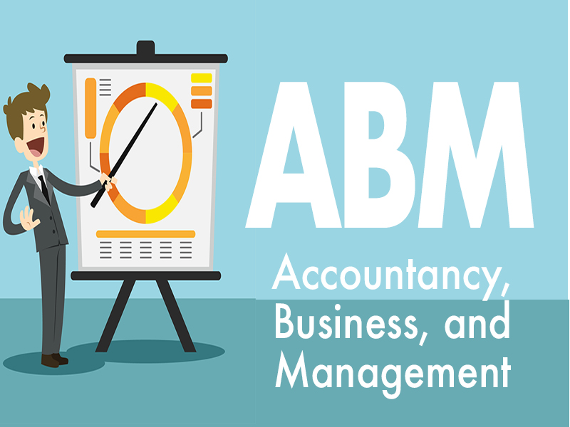

Rosales National High SchoolRosales National High School
Rosales National High SchoolRosales National High SchoolHome About Faculties Academic Tracks TVL Tracks Events Log out
|  |
|---|
The Accountancy, Business, and Management Strand (ABM) strand seeks to prepare the young business leaders of tomorrow. ABM strand paves the way for business-related college degrees. It teaches the basic concepts of financial management, accounting, and corporate operations. The programs under this strand aims to instill crucial skills that one needs to perform well in their future careers and businesses. Learning about business and finance might be challenging. Nevertheless, taking ABM strand programs will help young entrepreneurs, like you, to adopt the right mindset for brighter careers.
Accounting:
* BS Accountancy.
* BS Accounting Technology.
* BS Accounting Information System.
Business:
* BS Entrepreneurship.
* BS Business Administration.
* BS Finance.
* BS Economics.
* BS Customs Administration.
Management:
* BS Legal Management.
* BS Human Resources Management.
* BS Community Development.
* BS Business Management.
Hospitality And Tourism:
* BS Hotel and Restaurant Management.
* BA International Studies.
* BA Fashion Marketing.
* BS Foreign Service.
* BS Tourism Management.
all credits goes to bukas.ph
* Entrepreneurs.
* Advertising Professionals.
* Marketing or Sales Representatives.
* Accountants.
* Account Managers.
* Bank Tellers.
* Restaurateurs.
* Corporate Managers.